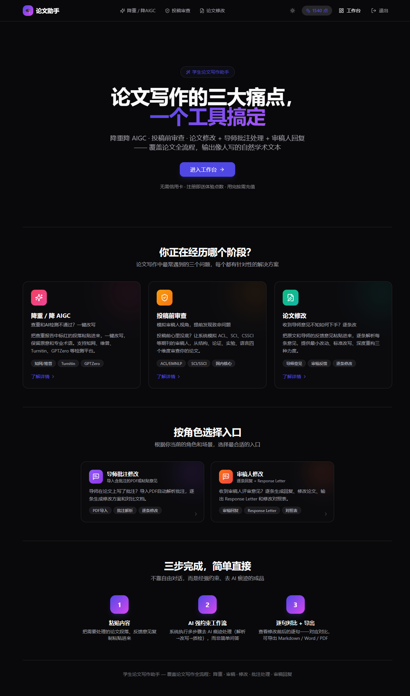
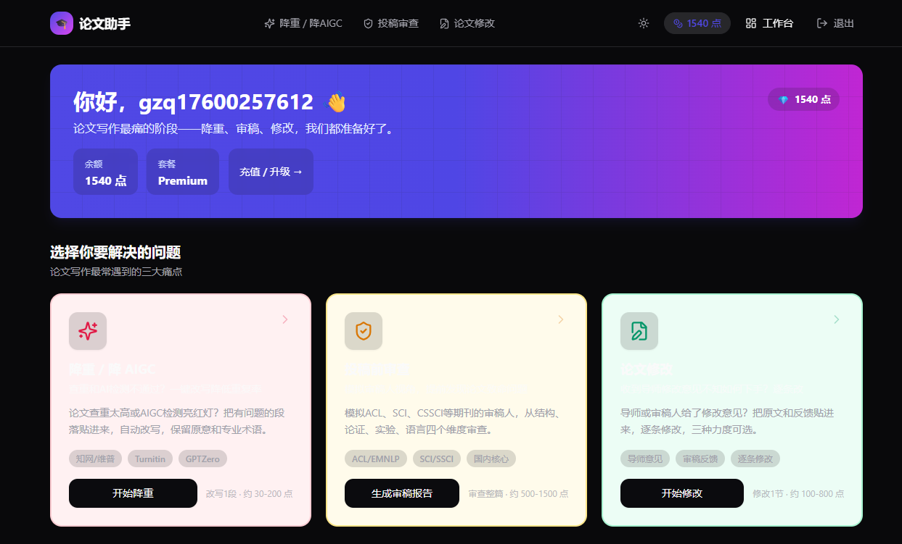
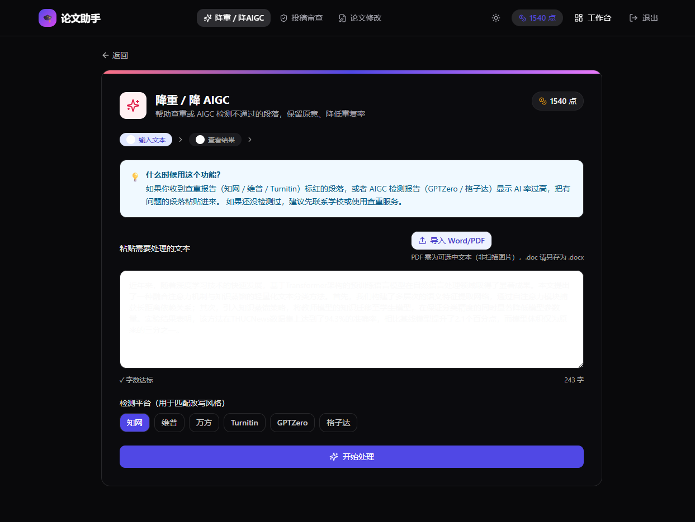
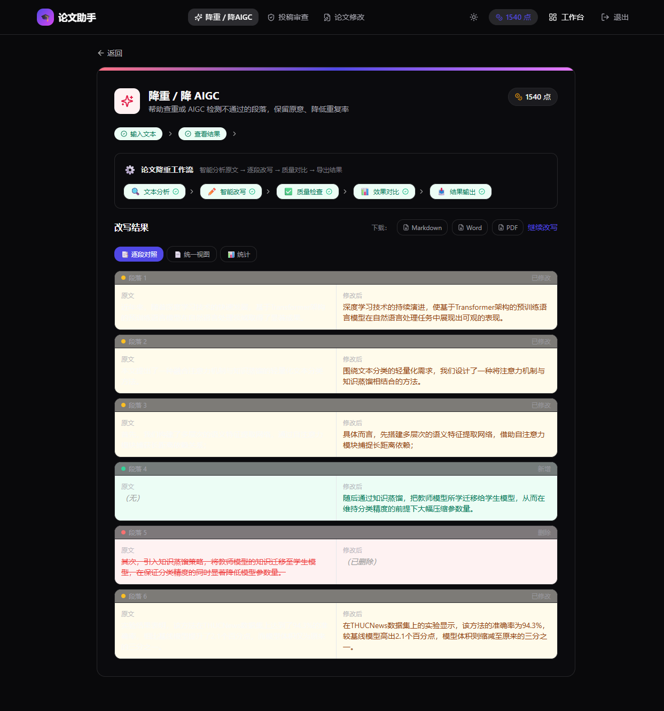
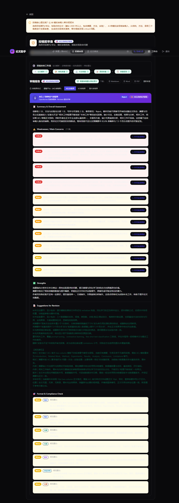
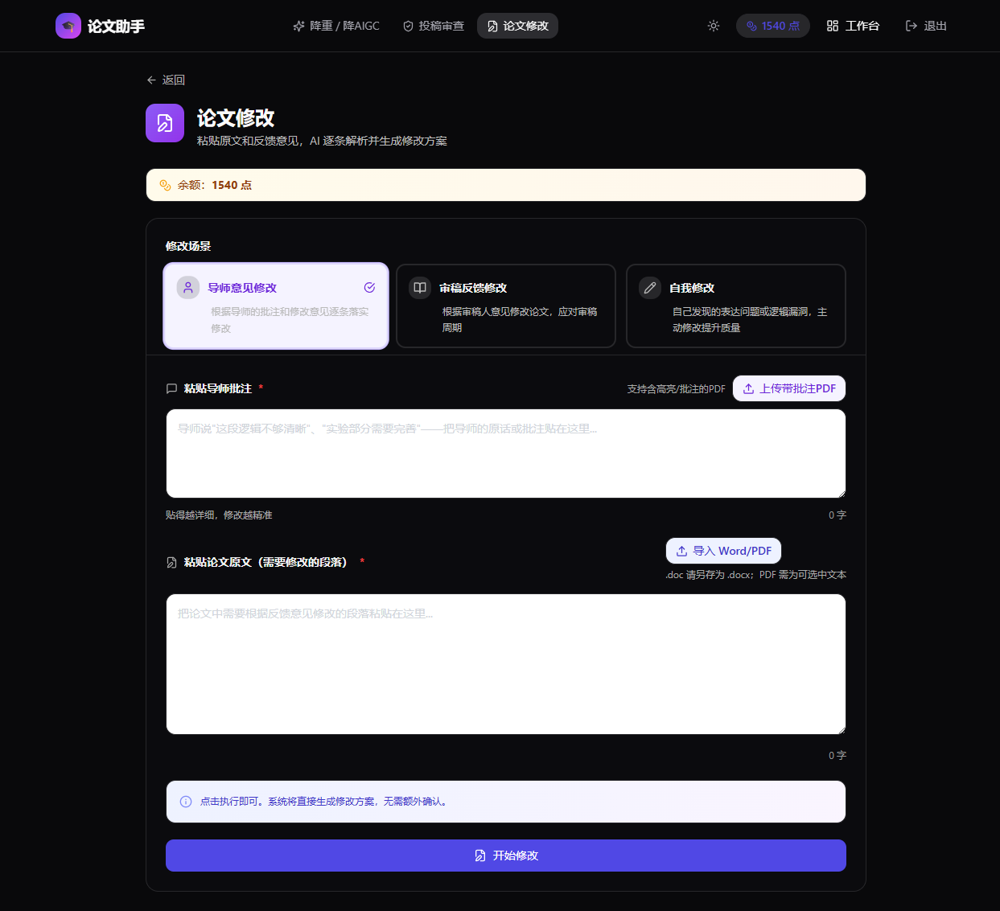

一款面向高校学生与研究者的 AI 论文写作辅助 SaaS。独立完成市场调研、产品定位、功能设计、 商业化体系设计与全栈落地，已部署上线并完成端到端验证。
学生论文写作的真正痛点不在"写不出"，而在"写完之后"——查重降不下来、AI 检测亮红灯、 导师意见不知怎么改、投稿心里没底。市面上的工具只解决单点（查重 / 降重）， 没有人把"降重降 AIGC → 投稿前审查 → 导师批注 / 审稿回复"做成一条闭环。 本产品就是切这个空白地带。
以下均为线上环境的真实运行截图，非设计稿。


每个功能都对应一个具体的失败场景，而不是"AI 能做什么"。
场景：查重报告标红 / AIGC 检测亮红灯，自己改又改不像人写的。


场景：论文写完了，投出去之前心里没底，又找不到人帮忙看。

场景：收到导师批注 / 审稿意见，不知道从哪下手，也不知道怎么回复。

输入论文全文，模拟答辩现场生成预判问题与回答要点
按目标期刊要求检查格式合规性，输出分级问题清单
修改后再审一遍，确认此前的问题是否真的解决了
围绕主题与参考文献生成综述草稿
学术中文翻译为符合英文学术规范的表达
定价不是拍脑袋定的：核心逻辑是"用免费额度降低尝试门槛，用点数制匹配用量差异， 用订阅锁定高频用户"。
| 层级 | 价格 | 权益设计 | 产品意图 |
|---|---|---|---|
| 注册赠送 | 赠送体验点数 | 可完整体验一次核心功能 | 降低首次尝试门槛 |
| 点数充值 | 4 档阶梯定价 | 最高档附赠比例最高，档位越高性价比越强 | 匹配低频用户的用量差异 |
| Pro 订阅 | 低价档位 · 月付/年付 | 每日免费核心功能次数 + 辅助功能折扣 | 锁定中频用户 |
| Premium 订阅 | 高价档位 · 月付/年付 | 更高免费次数 + 折扣 + 优先响应 | 锁定毕业论文期高频用户 |
| 加急选项 | 点数加倍 | 优先处理队列 | 为时间敏感场景提供溢价空间 |
充值页与订阅页已实现完整交互（档位选择、月付/年付切换、支付方式选择、消费流水），此处不展示含真实定价数据的界面截图。
这部分是我认为比"做了什么功能"更值得讲的东西——为什么这么选。
背景：调研 11 款竞品后发现，查重 / 降重赛道已是红海——PaperYY 靠免费查重引流、知网靠官方背书垄断、格子达按论文类型分层定价。作为个人产品，在这个赛道拼价格和渠道完全没有胜算。
判断：但"投稿前审查 + 导师批注协作 + 审稿回复"这个环节，没人做成闭环。笔灵是广度覆盖的"什么都有"，ReadPaper 只有"模拟同行反馈"一个单点，都停留在"给个反馈"而没有落到"帮你改完并回复"。
背景：最早的实现是让 AI 输出一份完整的审稿报告文本，直接铺在页面上。实际用下来发现用户根本抓不住重点——一屏密密麻麻的文字里，"哪条最致命"完全看不出来。
判断：AI 产品的核心不是"生成内容"，而是"把生成的内容转化成用户的下一步动作"。所以把输出改造成了带标记的分段结构，后端按标记解析出结构化字段，前端按严重度彩色高亮展示。
背景：初期版本在用户提交前会弹出"预估费用确认"，还提供三种修改力度、多个模型选择。看起来是给了用户掌控感，实际是让用户在还没看到任何结果前，先做了一堆自己无法判断的选择。
判断：用户来这里是解决问题的，不是来配置参数的。这些选项对用户来说都是"我不知道该选什么"的负担，而且增加了操作步数，直接拉低了任务完成率。
我认为作品集里说清楚"没做成什么"比只列成绩更有价值——这能体现对工程可行性的判断力。
| 能力 | 状态 | 说明 |
|---|---|---|
| 三大核心功能 | 已上线 | 降重降 AIGC / 投稿前审查 / 论文修改，线上真实可跑 |
| 辅助功能 5 项 | 已上线 | 答辩模拟 / 格式预检 / 改后复查 / 文献综述 / 中译英 |
| 点数与订阅体系 | 已上线 | 充值档位、订阅权益、消费流水完整闭环 |
| 增量更新 | 已上线 | 改后复查、逐句对照、结构化报告均已迭代上线 |
| 多模型分层路由 | 未落地 | 架构设计中规划了 DeepSeek / GPT-4o / Claude 三层路由以优化成本，实际当前为 DeepSeek 单模型直连，未实施 |
| Dify 可视化工作流 | 未落地 | 设计了 5 套 Dify 工作流 YAML 定义，因变量解析问题暂未启用，当前走直连实现 |
| 真实支付网关 | 规划中 | 已预留支付宝 / 微信支付接口与订单场景码，尚未接入真实支付 |
| 真实用户数据 | 暂无 | 产品已上线可访问，但尚未推广，暂无真实用户与付费数据 |